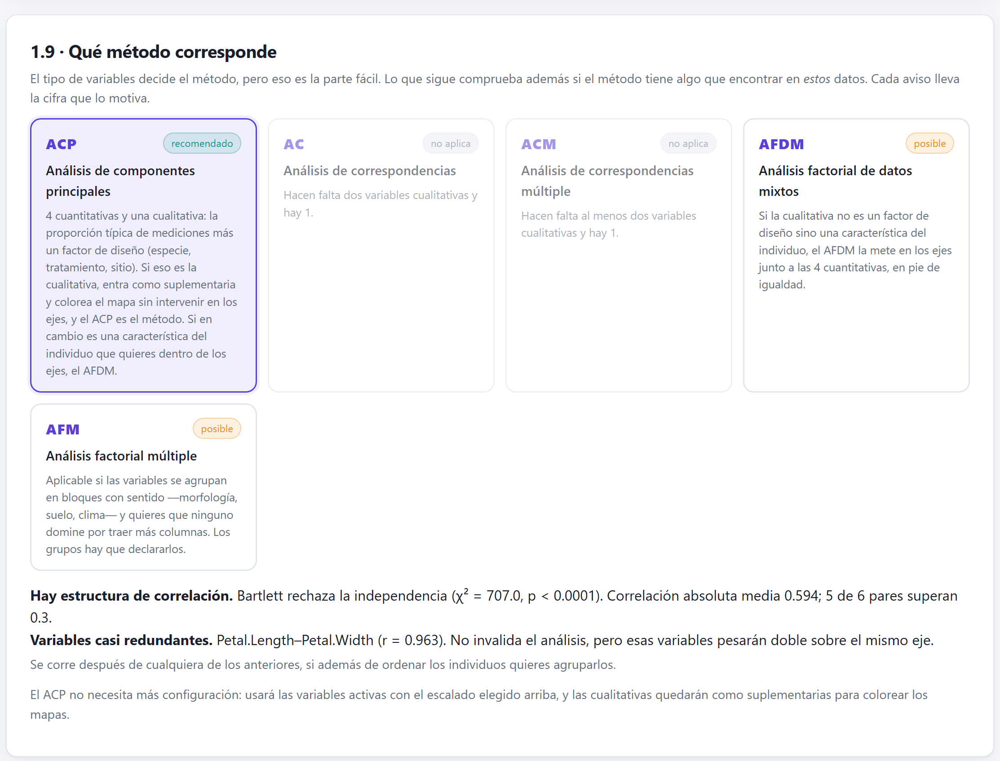
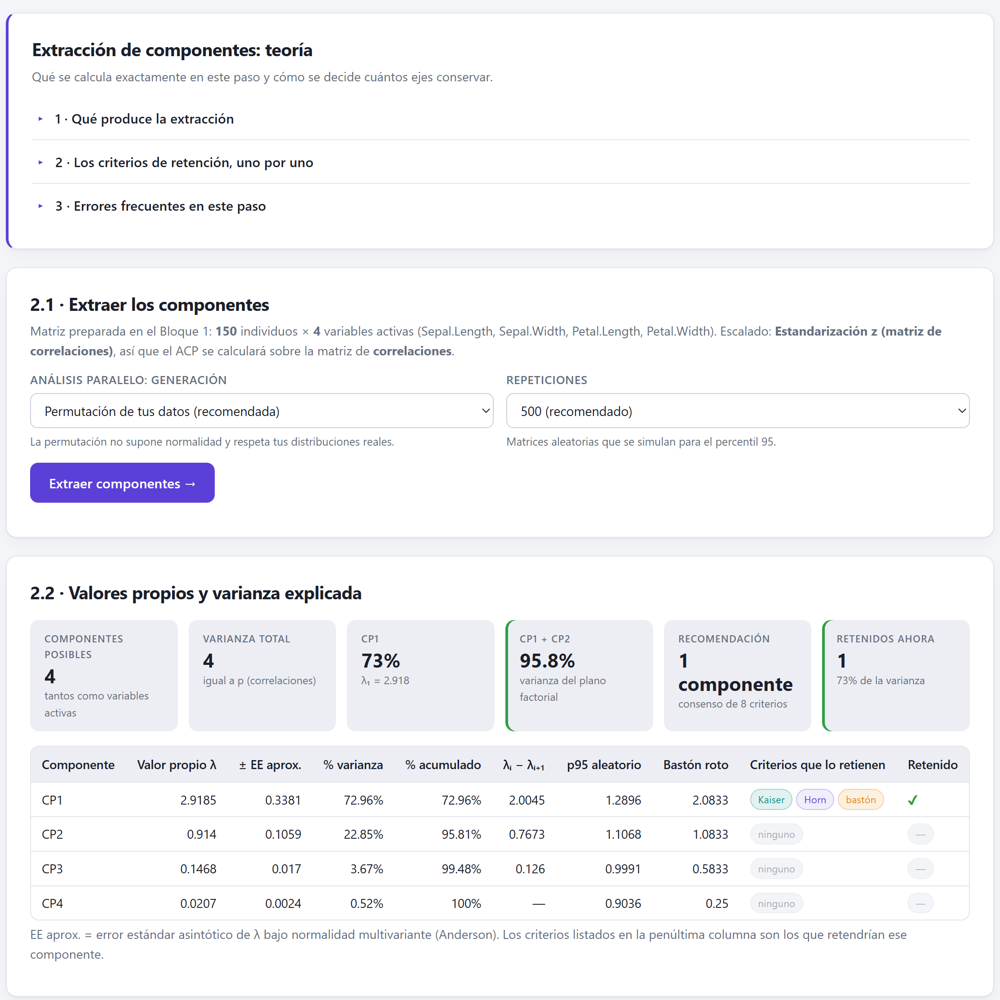
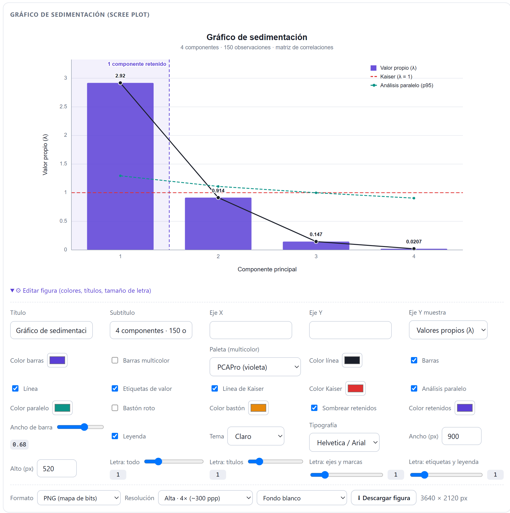

The identifier in the citation of the program is the concept DOI: it always leads to the most recent version, so every citation accumulates in a single record. The same reference appears in the How to cite button of Block 1, in section 6.4 and in the automatic report.
PCAPro runs entirely inside your browser. The files you open are read on your own computer and are never sent to any server, not even when you use the online version. You can analyse unpublished data, or data under a confidentiality agreement, with no risk of it leaving your machine.
The illustrations, diagrams and screenshots in this manual are original and were produced with the program itself or with code written for the manual. The iris data are those of Fisher (1936), measured by Anderson; the other example sets are simulations created for teaching and are described in section 1.7.
The manual follows the same order as the app: the home screen and seven blocks that are worked through from left to right on the top bar. Each chapter explains one block, opens with just enough theory to decide well, describes what it computes and ends with a step-by-step example using the data that come with the program.
The colour of the block appears in the opening of its chapter, in the section numbers, in the theory boxes, in the tab on the edge of the sheet and in the contents. That way you know at a glance which part of the app you are in.
| Block | Name in the app | What it does |
|---|---|---|
| H | Home | Home screen, guided route and the reference for citing |
| 1 | Data and assumptions | Loading, the role of the variables, preparation, diagnostics and choice of method |
| 2 | Extraction | Eigenvalues, explained variance and how many axes to retain |
| 3 | Rotation | Seven rotations and the quality of the simple structure (PCA only) |
| 4 | Factor maps | Correlation circle, map of individuals, biplot, cos² and contributions |
| 5 | Interpretation | Naming axes, test values, group comparison and results draft |
| 5b | Clustering | Hierarchical clustering on the axes (HCPC), optional |
| 6 | Report | HTML report, PDF by printing and ZIP package |
Clarifications and practical tips that save time.
What can change your conclusions if it is overlooked.
The idea behind an analysis, without unnecessary formulae.
A case using the data that come with the program.
| If the value falls in this range… | then this is the recommended reading. |
They are guides for interpreting, not laws: what you know about your own study system always comes first.
| Written like this | Means |
|---|---|
| Extract components → | A button, checkbox, menu or title of the app, exactly as it appears on screen. |
| Block 4›4.3 · Correlation circle | A path: go to the first place and then to the second. |
practice1_soils.csv | The name of a file, column or value, written exactly as it is. |
| λ, cos², PC1, KMO | Quantities and abbreviations; their meaning is explained the first time they appear and is gathered in the glossary (appendix C). |
| ● ◐ — | Available · partly available or available as an option · not applicable. |
What the program is, which questions it answers, what data it accepts and how it is worked through from beginning to end. It includes the ideas of factor analysis you need in order to make the most of the rest of the manual.
PCAPro is a platform for carrying out a complete, well-grounded principal component analysis: it takes the table that comes out of the field or the laboratory, checks whether it supports the analysis, helps decide how many axes to keep, draws the factor maps, interprets them and delivers a report ready to accompany a paper.
Computing a PCA is never the hard part: any statistical program returns the eigenvalues. What decides whether the analysis holds up are the decisions around it —how to treat missing data, whether to standardise, how many components to retain, which loadings to interpret—, and there the usual software computes the number and stops. PCAPro puts the methodological argument next to the number that justifies it, at the moment the decision has to be made, and leaves the decision in your hands.
Besides PCA, the same route serves four other factor methods —simple and multiple correspondence analysis, factor analysis of mixed data and multiple factor analysis— and, on top of any of them, clustering the individuals. Everything happens inside the web browser: there is nothing to install, no programming knowledge is required and the data never leave the computer.
index.html or from its internet address. It requires no administrator rights.| Stage | What you obtain | Block |
|---|---|---|
| Data input | Reading of spreadsheets (.xlsx, .xls, .csv, .tsv, .txt) with detection of the separator and the decimal mark; type and role of each column: active, supplementary, qualitative, identifier or excluded. | 1 |
| Preparation | Handling of missing data, four transformations and seven ways of scaling, with the choice between the correlation and the covariance matrix. | 1 |
| Diagnostics | Bartlett's test of sphericity, KMO with per-variable MSA, determinant, multicollinearity, Mahalanobis outliers, skewness and the n:p ratio, with a grade from A to D and written recommendations. | 1 |
| Choice of method | A recommender that reads the types of variables and the structure of the data and says which method applies, which is possible and which is not. | 1 |
| Extraction | Eigenvalues with their standard error, explained variance and eight retention criteria side by side with a consensus recommendation. | 2 |
| Rotation | Varimax, quartimax, equamax, parsimax, promax, direct oblimin and quartimin, with pattern and structure matrices. | 3 |
| Maps | Correlation circle, map of individuals, biplot, cos², contributions, ellipses and supplementary elements; the maps that belong to each method. | 4 |
| Interpretation | Description of each axis, test values of the categories, group comparison, characteristic individuals, goodness of fit and a draft written with your own figures. | 5 |
| Clustering | Ward on the factor coordinates, three rules for the number of clusters, consolidation by k-means, dendrogram and description of each cluster. | 5b |
| Publication | Editable figures exportable to SVG, PNG, JPG or WEBP up to 12×; HTML report, PDF by printing and a ZIP package with figures, tables and the reference for citing. | 6 |
For anyone who measures several characteristics on the same plants, plots, soils, accessions or sites and needs to summarise them without losing rigour: undergraduate and postgraduate students starting out in multivariate statistics, researchers in agronomy, ecology, biology and soil science who have to justify every decision to a reviewer, and teachers who want to show in class what a PCA does and where it usually fails. Every result comes with a plain-language reading and the theory that supports it, so the app also works as a teaching tool.
A good analysis begins with a question. The table below translates the most frequent questions into the analysis that answers them and the block where it is found.
| Question | The analysis that answers it | Block |
|---|---|---|
| Do my data support a factor analysis? | Bartlett, KMO and per-variable MSA, determinant and a grade from A to D | 1 |
| Which method fits my variables? | The recommender on the 1.9 · Which method applies card | 1 |
| Should I standardise my variables? | Scale profile, the seven scaling options and the correlations-or-covariances choice | 1 |
| Are there redundant variables or outlying individuals? | Nearly collinear pairs, determinant and Mahalanobis distance | 1 |
| How many components do I keep? | Eight retention criteria and their consensus | 2 |
| Can I make the axes easier to read? | Orthogonal and oblique rotations, and the quality of the simple structure | 3 |
| Which variables define each axis? | Loadings, cos², contributions and the correlation circle | 4 5 |
| How are my individuals, treatments or sites ordered? | Map of individuals, biplot and ellipses by group | 4 |
| Which categories characterise an axis? | Test values of the categories | 5 |
| Do my groups differ on the components? | ANOVA and Kruskal–Wallis per component, with their circularity warning | 5 |
| Which associations does a frequency table support? | Correspondence analysis with residuals and contributions to χ² | 2 4 |
| How are the answers of a survey related? | Multiple correspondence analysis | 2 4 5 |
| Do my groups of variables —soil, climate, plant— tell the same story? | Multiple factor analysis: RV coefficients and partial points | 2 4 |
| Do my individuals form natural clusters? | Hierarchical clustering on the axes and dendrogram | 5b |
| How do I report it in a paper? | Report, ZIP package and methods paragraph with the citation | 6 |
You do not need a prior course to use the app, but these five ideas appear in every chapter. Read them once and come back to them when you need to.
Every factor analysis starts from a table. Each row is an individual —a plant, a plot, a soil sample, an accession— and each column is a variable measured on all of them. The active variables build the axes; the supplementary ones take no part in the computation, but are projected onto the maps afterwards to help read them. A design factor, such as the treatment or the site, usually goes in as supplementary.
When two variables rise and fall together, they tell part of the same story. The length and the width of a leaf, for instance, both reflect size. The correlation coefficient r, between −1 and 1, measures that agreement. A PCA only has something to summarise if the variables are correlated: with independent variables, each one is its own axis and there is nothing to gain.
A principal component is a combination of the original variables oriented in the direction in which the individuals spread out most. The first (PC1) takes up the largest possible variance; the second (PC2), the largest that remains, perpendicular to the first; and so on. The variance each component captures is its eigenvalue, λ.
Three quantities keep you from over-interpreting. The loading is the correlation between a variable and an axis: it says which variables define it and in which direction. The cos² measures how well represented a point —variable or individual— is on an axis or on a plane: a point with a low cos² appears near the centre of the map because it is poorly represented, not because it is average. The contribution says how much each element weighed in building the axis. A point far from the centre with a low cos² is misleading; one with a high contribution is what counts.
| Quantity | What it measures | Range | How it is read |
|---|---|---|---|
| Eigenvalue λ | Variance captured by an axis | 0 to p | With correlations, λ > 1 means the axis summarises more than a single variable. |
| % of variance | The share of the total information an axis takes up | 0 to 100 % | The cumulative figure says how much you keep if you stay with k axes. |
| Loading | Correlation between variable and axis | −1 to 1 | |loading| ≥ 0.40 is the usual threshold for interpreting; the sign indicates the side of the axis. |
| Communality | Variance of a variable taken up by the retained axes | 0 to 1 | Below 0.50 the variable is poorly represented. |
| cos² | Quality of representation of a point | 0 to 1 | The closer to 1, the more faithful its position on the map. |
| Contribution | Weight of an element in building the axis | 0 to 100 % | Those above the mean contribution (100/p for variables) are the ones that define the axis. |
| Score | Position of an individual along an axis | unbounded, mean 0 | Individuals with similar scores have similar profiles. |
PCA looks for variance, and variance depends on the units. If one variable is in cubic millimetres and another is a pH, the first has a variance millions of times larger and takes the first component for itself, even if it is not the most important one. Standardising —subtracting the mean and dividing by the standard deviation— gives them all the same variance, 1, and amounts to working with the correlation matrix. Without standardising you work with the covariance matrix, which only makes sense when all the variables share a unit and a scale.
Two standardised variables have a variance of 1 each; the total variance is 2. With a correlation of r = 0.80, the eigenvalues of their correlation matrix are 1 + r = 1.80 and 1 − r = 0.20: the first component keeps 90 % of the information. The loading of each variable on PC1 is √(1.80/2) = 0.949, so its cos² on that axis is 0.949² = 0.90. With r = 0.10 the eigenvalues would be 1.10 and 0.90, and PC1 would summarise barely 55 %: the variables share almost nothing and PCA has little to offer.
The type of the active variables decides the method. All five share the same logic —finding a few axes that summarise a table—, but each one is designed for a class of data. PCAPro solves them with a single computational core, which is why they share the maps, the interpretation, the clustering and the report.
| Method | Active variables | What you obtain that no other gives | Watch out for |
|---|---|---|---|
| PCA | Quantitative only | Eight retention criteria, rotation, loadings and communalities, goodness of fit with the reproduced matrix. | Mismatched units left unstandardised; outliers. |
| CA | Two qualitative, crossed in a frequency table | The χ² of independence, the residuals of each cell and a symmetric map of rows and columns. | Cells with an expected frequency below 5. |
| MCA | Several qualitative | Map of categories, Cramér's V between variables and the corrected percentages of Benzécri and Greenacre. | The raw percentages, biased downwards; rare categories. |
| FAMD | Quantitative and qualitative together | A map of variables where r² and η² are compared on the same scale. | Declaring a design factor as active. |
| MFA | Variables gathered into groups | Balance between groups, RV coefficients and partial points: how each group sees each individual. | Groups with a single variable. |
You do not have to decide blind. When the diagnostics are done, Block 1 shows the 1.9 · Which method applies card, which reads your data and grades each method as recommended, possible or not applicable, with the reason and the figures behind it. Chapter 3 explains it in detail.
A qualitative variable can play two very different roles. If it is a design factor —the treatment, the block, the sampling site—, it must not build the axes: it goes in as supplementary, the method is PCA and the factor serves to colour the map and compare groups. If it is a characteristic of the individual that you want inside the structure —flower colour, growth habit—, it goes in as active and the method is FAMD. The app cannot guess the difference; you can.

1 2 3 4 5 6index.html | The app. Open it with a double click. |
servidor.ps1 | Optional start-up with a local server. |
datos/ | The example and practice files. |
js/, css/ | The code of the program. |
curso/ | Material of the PCA workshop. |
tests/, lib/ | Verification of the computations. |
| Way | How | Bear in mind |
|---|---|---|
| Double click | Copy the whole PCAPro folder to your computer and double-click index.html. | Everything works except the Real example: iris (150 × 4) button: the browser does not allow reading files from the folder on its own. Load datos/iris.csv with the file picker. |
| Local server | Right-click servidor.ps1 › Run with PowerShell, and open http://localhost:8790 in the browser. | Everything works, examples included. The server is on your own computer: nothing goes out to the internet. |
| Online | Open luisangelbg.github.io/PCAPro/ in the browser. | Always the most recent version. The computations still happen on your own machine. |
The browser saves only the chosen language. The data and the results live while the tab is open: if you reload the page, the analysis starts from scratch. That is why it is worth downloading the report and the ZIP package of Block 6 before closing. Your original files are never modified.
Every block shares the same layout, so it is enough to learn it once. At the top is the step bar; below it, the content of the active block, which always follows the same order.
| Part | What it holds | How you recognise it |
|---|---|---|
| Theory of the block | Expandable topics that explain what is computed and how to decide. In Block 1 it is the full theoretical framework, with thirteen topics. | A card with a violet rule on the left; each topic opens with a click. |
| Numbered cards | The steps of the block in order: settings, results, figures and downloads. | Titles such as 2.2 · Eigenvalues and explained variance. |
| Main button | Runs the computation of the block with the chosen settings. | A violet button with an arrow, such as Extract components →. |
| Indicators | The figures that sum the result up. | Grey tiles; a green, amber or red border highlights what is favourable or what needs attention. |
| Checklists | Diagnostics and recommendations, each with the figure behind it. | Lines with a mark and a colour according to their severity. |
| Editable figures | Each figure with its editing panel and its export. | ⚙ Edit figure (colours, titles, font size) |
| Next step | Takes you to the block that follows. | At the end of the block, such as Go to Block 2: extraction → |

1 2 3 4 5 6The figures of every block work the same way. Below each one there is an editing panel that opens with ⚙ Edit figure (colours, titles, font size). It gathers titles, which elements are drawn, colours, theme, typeface and four font-size sliders. The figure is redrawn at once with every change. At the foot are the format, the resolution, the background and the download button, with the resulting size in pixels.

1 2 3 4 5 6For a paper, download in SVG if the journal accepts vector figures: it enlarges without losing sharpness and can be retouched in Inkscape or Illustrator. If it asks for a bitmap, use PNG at 8× (some 600 dpi) or more. JPG and WEBP are for presentations and web pages.
The program comes with two examples that load with a button from the 1.1 · Load your data set card, and five practice files in the datos/ folder, each designed to teach one lesson. The chapter of each block uses them in its step-by-step examples.
| Example or file | Size | Content and what it is for |
|---|---|---|
| Real example: iris (150 × 4) | 150 × 4 + species | Length and width of sepals and petals of three Iris species (Fisher, 1936). The classic example: it serves to check that the results agree with those of other programs. |
| Simulated example: leaf morphometry (120 × 9) | 120 × 9 + site | Nine leaf and plant characters at three sites, simulated on three latent factors: size, thickness and physiology. It always works, double click included. |
practice1_soils.csv | 90 × 6 + site | Soil fertility at three positions on a slope. The first complete analysis: everything comes out clean. |
practice2_seeds.csv | 120 × 9 + species | Morphometry and composition of the seeds of two species, with problems planted in it: redundancy, noise and outliers. |
practice3_scales.csv | 100 × 7 + plot | Variables in widely differing units (mm³, µS/cm, pH…): it teaches why one has to standardise. |
practice4_no_structure.csv | 80 × 6 + batch | Environmental variables unrelated to one another: it teaches when not to run a PCA. |
integrated_project_agronomy.csv | 150 × 12 + 2 groups + 1 supplementary | An agronomic experiment with four treatments and three blocks: the complete analysis from beginning to end. |
PCAPro's computations are checked against values published by independent programs, such as R. With iris, the eigenvalues agree with those of prcomp to six decimal places and the KMO with that of psych to three. Horn's parallel analysis uses resampling, so its 95th percentile may vary slightly in the last digit from one run to another; the eigenvalues do not. Appendix E describes the verification.
The blocks are ordered the way a study is done: first you make sure the data support the analysis, then the axes are extracted, you decide whether to rotate them, you read the maps, you interpret them and, at the end, you report. Each method travels a different path along that sequence, like metro lines that stop only at some stations.
| Block | PCA | CA, MCA, FAMD and MFA |
|---|---|---|
| 1 | Loading, the role of the variables, preparation and diagnostics. | The same, and card 1.9 asks for the configuration of the method: rows and columns in CA, which qualitative variables go in for MCA and FAMD, the group of each variable in MFA. |
| 2 | Eigenvalues and the eight retention criteria. | Inertia of each axis and criteria of its own: mean inertia, cumulative percentage and elbow; in MCA, Benzécri and Greenacre as well. |
| 3 | Seven rotations. | Not applicable. |
| 4 | Correlation circle, individuals, biplot, cos² and contributions. | Maps of their own: symmetric in CA; categories and individuals in MCA; variables, categories and individuals in FAMD; groups, individuals and partial points in MFA. |
| 5 | Dimension description, test values, group comparison, fit and draft. | Reading of each axis by contributions, test values of the categories and draft. |
| 5b | The same for all five: clustering works on the coordinates of the individuals, whichever method produced them. | |
| 6 | The same for all five: the report names the method and gathers its tables and figures. | |
| Criterion | Reference | What it says |
|---|---|---|
| n:p ratio | Common consensus | Between 5 individuals per variable (minimum) and 20 (ideal); 10:1 is what is usually asked for. |
| Absolute number | Comrey and Lee | 50 very poor, 100 poor, 200 fair, 300 good, 500 very good. |
| Strength of the structure | MacCallum and colleagues, 1999 | With high communalities (> 0.60) and three or four marker variables per component, 60 to 100 individuals may be enough; with low communalities (< 0.40) more than 300 may be needed. |
| For interpreting | Rule of thumb | At least three variables with a high loading on each component you retain. |
The modern rule is the third: how strong the structure is matters more than the raw number of rows. The Block 1 diagnostics compute the n:p ratio of your data and grade it.
Although you can go back to any block already unlocked, do not interpret an axis before reviewing the Block 1 diagnostics. A variable with a low MSA, an extreme outlier or unstandardised units change the components, and no map puts that right afterwards. If you change something in Block 1, press Prepare matrix and run diagnostics → again: the new preparation erases the previous extraction, and the extraction and the blocks that follow have to be redone from it.
The app accompanies every decision with statistical tests, thresholds and recommendations. Understanding what each one says —and what it does not say— avoids the two most common mistakes: believing that a significant result is an important one, and believing that a recommendation is an order.
It is the probability of observing a result as extreme as yours if there were no effect. In Bartlett's test, P < 0.05 says the variables are correlated. But with many individuals it almost always comes out significant, so it is a necessary condition, not a sufficient one: the KMO says whether those correlations are enough.
It measures how many standard deviations a category or a group departs from the centre. Above |1.96| the difference is not explained by chance (P < 0.05). In Block 5 and in the clustering it is a description, not a test: the axes and the clusters were built to separate.
| KMO | Kaiser's grade | What to do |
|---|---|---|
| ≥ 0.90 | Marvellous | Go ahead. |
| 0.80 – 0.89 | Meritorious | Go ahead. |
| 0.70 – 0.79 | Middling | Go ahead. |
| 0.60 – 0.69 | Mediocre | With reservations: state it when reporting. |
| 0.50 – 0.59 | Miserable | Review the variables with a low MSA. |
| < 0.50 | Unacceptable | Do not run the analysis with those variables. |
The same computation applied to each variable gives its MSA. Variables with MSA < 0.50 are removed one at a time, recomputing after each removal, because taking one out changes those of the rest.
With a lot of data, tiny differences come out significant. A component may separate two treatments with P < 0.001 and yet explain a minimal fraction of the variance. Always ask yourself whether the magnitude matters for your question, not only whether the P value is small.
With these foundations you are ready to work through the blocks. The next chapter introduces the home screen of the app, the theory that comes with each block and how to cite the program.